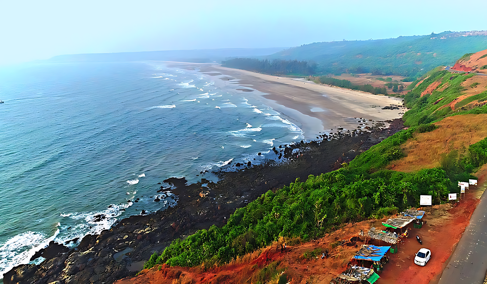

Ratnagiri
3-day trip
Package : 30,000 Rs

Here's a tourist guide for Ratnagiri:
- Ratnagiri Fort: A historic hill fort offering stunning views of the Arabian Sea and the surrounding landscape.
- Ganapatipule Temple: Famous for its beautiful beach and the Ganapati idol, which is believed to be self-originated.
- Bhatye Beach: A calm and serene beach perfect for unwinding and enjoying the sunset.
- Jaigad Fort: A scenic fort located near the Jaigad Creek, known for its lighthouse and panoramic views.
- Mirya Beach: A peaceful and less crowded beach, ideal for a quiet retreat and long walks along the shore.
- Thibaw Palace: A colonial-era palace that served as the residence of the exiled king of Burma, offering historical insights.
- Ratnagiri Marine Museum: Explore marine life exhibits and learn about the coastal ecosystem.
- Keshavraj Temple: An ancient temple dedicated to Lord Vishnu, nestled in the serene surroundings of nature.
- Guhagar Beach: A quiet and untouched beach, ideal for relaxation and enjoying local seafood.
- Alphonso Mangoes: Ratnagiri is known for its famous and delicious Alphonso mangoes, a must-try during the season.